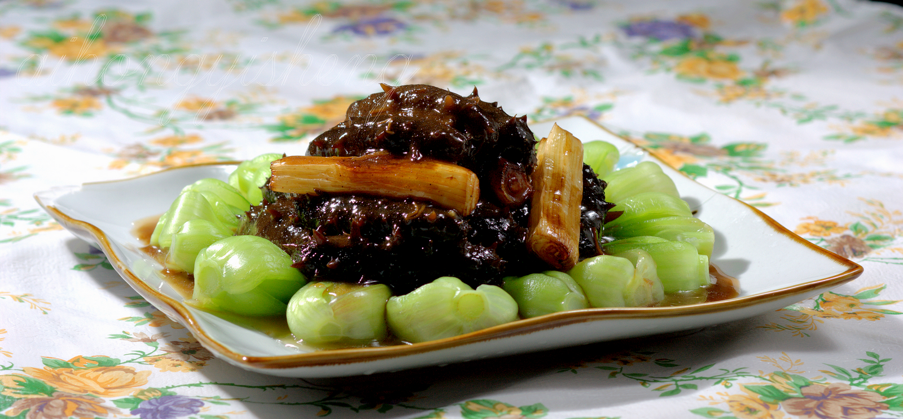

葱烧海参
葱烧海参是鲁菜中的高档菜品，选用优质海参和大葱烹制，海参软糯，葱香浓郁，营养丰富。 这道菜以山东大葱的甜香与海参的鲜美完美结合，体现了鲁菜讲究原料、注重火候的特点， 是宴席上的珍品佳肴。
葱香浓郁
海参软糯
咸鲜适口
汁浓味厚
120
准备时间(分钟)
30
烹饪时间(分钟)
3-4
份量(人)
营养与功效
葱烧海参是一道营养价值极高的滋补菜品。海参富含蛋白质、多种氨基酸和微量元素，具有补肾益精、养血润燥的功效。大葱则含有多种维生素和矿物质，能够促进血液循环。这道菜适合体质虚弱、需要滋补的人群食用，是传统的高级滋补佳品。
主要食材
- 水发海参 300克
- 大葱 200克
- 高汤 300毫升
- 料酒 2汤匙
- 酱油 2汤匙
- 姜片 3片
- 白糖 1茶匙
- 淀粉 1汤匙
- 食用油 适量
- 盐 适量
营养成分（每100克）
- 热量：98千卡
- 蛋白质：16.5克
- 脂肪：2.2克
- 碳水化合物：4.5克
- 钙：285毫克
- 铁：2.8毫克
- 锌：1.5毫克
- 钠：380毫克
详细做法步骤
- 将水发海参洗净，切成条状或保持整只，根据个人喜好。
- 大葱洗净，只取葱白部分，切成5厘米长的段。
- 锅中放水烧开，放入海参焯水1分钟，捞出沥干。
- 锅中放油，烧至五成热，放入葱段炸至金黄色，捞出葱段备用。
- 锅中留少量底油，放入姜片爆香。
- 加入海参翻炒几下，烹入料酒。
- 加入酱油、白糖和高汤，大火烧开后转小火烧制10分钟。
- 加入炸好的葱段，继续烧制5分钟，让海参充分吸收葱香。
- 根据口味加盐调味，用水淀粉勾芡，使汤汁浓稠。
- 将烧好的海参装盘，葱段围边，淋上汤汁即可。
烹饪小贴士
- 选择肉质厚实、刺挺直的水发海参，品质更好
- 海参焯水时间不宜过长，以免影响口感
- 炸葱段时火候要控制好，炸至金黄色即可，过火会发苦
- 使用高汤代替水，能使菜肴更加鲜美
- 烧制时要用小火慢烧，使海参充分吸收汤汁味道
- 勾芡时芡汁不宜过浓，以能包裹住海参为宜
- 如果使用干海参，需要提前3-4天泡发
历史与文化
葱烧海参是鲁菜中的传统名菜，起源于山东沿海地区。山东半岛盛产优质海参，而章丘大葱又是闻名全国的特产，二者结合便创造了这道经典菜肴。
在古代，海参被视为海味"八珍"之一，只有富贵人家才能享用。如今，葱烧海参已成为鲁菜的代表作，在重要宴席和节日餐桌上常见其身影，体现了鲁菜讲究原料、注重火候的烹饪理念。